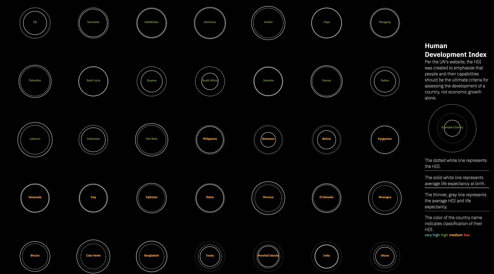

Play/Learn: Data viz explorations
These screenshots represent various personal explorations in bringing data to life visually using D3.js. With these, I'm sacrificing polish or completeness and prioritizing learning a new skill (e.g., scrollytelling or interpolating colors).

A scrollable visualization of the Living Planet Index using D3 and Russell Goldenberg's scrollama
An artistic visualization using nested circles to represent life expectancy and the UN's Human Development Index for different countries.
Visualization using small multiples to explore differences in railroad infrastructure quality for different countries.">A visualization using parallel plot small multiples to explore differences in railroad infrastructure quality for different countries.